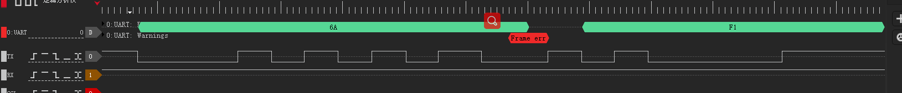
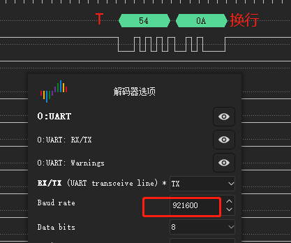
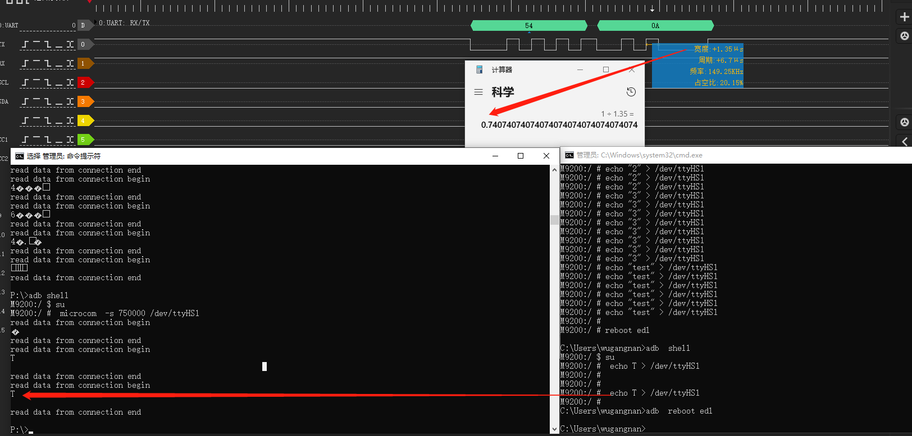

概述
kernel阶段串口无法设置750k波特率问题分析。
参考
测试方案
由于该项目使用了流控，需要将microcom增加流控属性，修改如下：
--- a/QSSI.12/external/toybox/lib/tty.c
+++ b/QSSI.12/external/toybox/lib/tty.c
@@ -65,7 +65,7 @@ void xsetspeed(struct termios *tio, int speed)
{
int i, speeds[] = {50, 75, 110, 134, 150, 200, 300, 600, 1200, 1800, 2400,
4800, 9600, 19200, 38400, 57600, 115200, 230400, 460800,
- 500000, 576000, 921600, 1000000, 1152000, 1500000, 2000000,
+ 500000, 576000, 750000, 921600, 1000000, 1152000, 1500000, 2000000,
2500000, 3000000, 3500000, 4000000};
// Find speed in table, adjust to constant
@@ -95,6 +95,9 @@ int set_terminal(int fd, int raw, int speed, struct termios *old)
// Output appends CR to NL, does magic undocumented postprocessing
termio.c_oflag = ONLCR|OPOST;
+ termio.c_oflag &= ~ IXON;
+ termio.c_oflag &= ~ IXOFF;
+
// Leave serial port speed alone
// termio.c_cflag = C_READ|CS8|EXTB;
@@ -104,14 +107,15 @@ int set_terminal(int fd, int raw, int speed, struct termios *old)
// erase line char at a time
// "extended" behavior: ctrl-V quotes next char, ctrl-R reprints unread chars,
// ctrl-W erases word
- termio.c_lflag = ISIG|ICANON|ECHO|ECHOE|ECHOK|ECHOCTL|ECHOKE|IEXTEN;
+ //termio.c_lflag = ISIG|ICANON|ECHO|ECHOE|ECHOK|ECHOCTL|ECHOKE|IEXTEN;
+ termio.c_lflag = CRTSCTS;
if (raw) cfmakeraw(&termio);
if (speed) {
int i, speeds[] = {50, 75, 110, 134, 150, 200, 300, 600, 1200, 1800, 2400,
4800, 9600, 19200, 38400, 57600, 115200, 230400, 460800,
- 500000, 576000, 921600, 1000000, 1152000, 1500000, 2000000,
+ 500000, 576000, 750000, 921600, 1000000, 1152000, 1500000, 2000000,
2500000, 3000000, 3500000, 4000000};
// Find speed in table, adjust to constant
diff --git a/QSSI.12/external/toybox/toys/net/microcom.c b/QSSI.12/external/toybox/toys/net/microcom.c
old mode 100644
new mode 100755
--- a/QSSI.12/external/toybox/toys/net/microcom.c
+++ b/QSSI.12/external/toybox/toys/net/microcom.c
@@ -33,6 +33,8 @@ static void restore_states(int i)
tcsetattr(TT.fd, TCSAFLUSH, &TT.old_fd);
}
+char tips_begin[] = "read data from connection begin\n";
+char tips_end[] = "\nread data from connection end\n";
void microcom_main(void)
{
struct termios tio;
@@ -62,7 +64,11 @@ void microcom_main(void)
// Read from connection, write to stdout.
if (fds[0].revents) {
- if (0 < (i = read(TT.fd, toybuf, sizeof(toybuf)))) xwrite(0, toybuf, i);
+ if (0 < (i = read(TT.fd, toybuf, sizeof(toybuf)))) {
+ xwrite(1, tips_begin, sizeof(tips_begin));
+ xwrite(1, toybuf, i);
+ xwrite(1, tips_end, sizeof(tips_end));
+ }
else break;
}
microcom -s 750000 /dev/ttyHS1设置750k波特率后另外开个串口进行写数据操作:
M92xx:/ # echo T > /dev/ttyHS1
M92xx:/ # echo T > /dev/ttyHS1
M92xx:/ # echo T > /dev/ttyHS1
收到数据有问题，逻辑分析仪解析出错：

根据单bit周期算出波特率为909K：

将波特率配置为921600后数据正常显示：

软件流程
microcom中设置波特率软件流程如下：
QSSI.12/external/toybox/toys/net/microcom.c:
* void microcom_main(void)
* xsetspeed(&tio, TT.s);
* speeds[] = {50, 75, 110, 134, 150, 200, 300, 600, 1200, 1800, 2400,
* cfsetspeed(tio, i+1+4081*(i>15));
cfsetspeed() 函数扩展为同时设置输入和输出波特率。
跳过tty operation函数直接看一下驱动中设置波特率的函数：
``:
static const struct uart_ops msm_geni_console_pops = {
.tx_empty = msm_geni_serial_tx_empty,
.stop_tx = msm_geni_serial_stop_tx,
.start_tx = msm_geni_serial_start_tx,
.stop_rx = msm_geni_serial_stop_rx,
.set_termios = msm_geni_serial_set_termios,
.startup = msm_geni_serial_startup,
.config_port = msm_geni_serial_config_port,
.shutdown = msm_geni_serial_shutdown,
.type = msm_geni_serial_get_type,
.set_mctrl = msm_geni_cons_set_mctrl,
.get_mctrl = msm_geni_cons_get_mctrl,
#ifdef CONFIG_CONSOLE_POLL
.poll_get_char = msm_geni_serial_get_char,
.poll_put_char = msm_geni_serial_poll_put_char,
#endif
.pm = msm_geni_serial_cons_pm,
};
static const struct uart_ops msm_geni_serial_pops = {
.tx_empty = msm_geni_serial_tx_empty,
.stop_tx = msm_geni_serial_stop_tx,
.start_tx = msm_geni_serial_start_tx,
.stop_rx = msm_geni_serial_stop_rx,
.set_termios = msm_geni_serial_set_termios,
.startup = msm_geni_serial_startup,
.config_port = msm_geni_serial_config_port,
.shutdown = msm_geni_serial_shutdown,
.type = msm_geni_serial_get_type,
.set_mctrl = msm_geni_serial_set_mctrl,
.get_mctrl = msm_geni_serial_get_mctrl,
.break_ctl = msm_geni_serial_break_ctl,
.flush_buffer = NULL,
.ioctl = msm_geni_serial_ioctl,
};
其中msm_geni_serial_set_termios就是设置波特率的函数，其中有个比较重要的函数uart_get_baud_rate：
static void msm_geni_serial_set_termios(struct uart_port *uport,
struct ktermios *termios, struct ktermios *old)
{
/* baud rate */
baud = uart_get_baud_rate(uport, termios, old, 300, 4000000);
port->cur_baud = baud;
}
软件流程：
* uart_get_baud_rate(struct uart_port *port, struct ktermios *termios,
└── baud = tty_termios_baud_rate(termios);
└── return cbaud >= n_baud_table ? 0 : baud_table[cbaud];
其中baud_table为所有波特率支持列表，在这里面添加750000就能够配置了：
static const speed_t baud_table[] = {
0, 50, 75, 110, 134, 150, 200, 300, 600, 1200, 1800, 2400, 4800,
9600, 19200, 38400, 57600, 115200, 230400, 460800,
#ifdef __sparc__
76800, 153600, 307200, 614400, 750000, 921600 //这里添加
#else
500000, 576000, 750000, 921600, 1000000, 1152000, 1500000, 2000000,
2500000, 3000000, 3500000, 4000000
#endif
};
验证结论
可以看到波特率和发送接收的数据已经没问题了。

打印机调试
ftest打开不支持打印机：
2022-12-26 22:15:53.025 4122-5107/com.xxx.ft E/PrintManager: NO SUPPORT ERROR:0x60000201
2022-12-26 22:15:53.026 4122-5107/com.xxx.ft E/DBG: PrnTest-> PrintException:
com.xxx.api.PrintException: Not Support for this device
at com.xxx.api.PrintManager.prnInitEx(PrintManager.java:196)
at com.xxx.api.PrintManager.prnInit(PrintManager.java:209)
at com.xxx.ft.module.PrnTest.test(PrnTest.java:235)
at com.xxx.ft.module.PrnTest.access$000(PrnTest.java:49)
at com.xxx.ft.module.PrnTest$2.dox(PrnTest.java:78)
at com.xxx.ft.tools.BaseTest.lambda$execute$0$BaseTest(BaseTest.java:542)
at com.xxx.ft.tools.-$$Lambda$BaseTest$U9HGJDwDf8wlpZP9XWVZ0ca-85Q.run(Unknown Source:6)
at java.util.concurrent.ThreadPoolExecutor.runWorker(ThreadPoolExecutor.java:1167)
at java.util.concurrent.ThreadPoolExecutor$Worker.run(ThreadPoolExecutor.java:641)
at java.lang.Thread.run(Thread.java:920)
继续报错open sys class error：
2022-12-27 12:39:30.286 8576-8576/? E/xxxSVR: ++++++ Start PaxApiService ++++++
2022-12-27 12:39:30.286 8576-8576/? E/xxxSVR: The current series : ATM, The current model : M92xx
2022-12-27 12:39:30.286 8576-8576/? E/xxxSVR: initDevConfig
2022-12-27 12:39:30.286 8576-8576/? E/xxxSVR: initDevConfig model = M92xx
2022-12-27 12:39:30.286 8576-8576/? E/xxxSVR: ++++++ Create M92xx Config success ++++++
2022-12-27 12:39:30.298 8576-8576/? W/libc: Unable to set property "ro.auth.baudrate" to "3000000": error code: 0xb
2022-12-27 12:39:30.311 8576-8576/? W/libc: Unable to set property "ro.rpc.baudrate" to "3000000": error code: 0xb
2022-12-27 12:39:30.311 8576-8576/? E/xxxSVR: ++++++ dumpDevConfig start ++++++
2022-12-27 12:39:30.311 8576-8576/? E/xxxSVR: SPDevConfig : spDevName /dev/xxxPortRPC, rate 750000
2022-12-27 12:39:30.311 8576-8576/? E/xxxSVR: MagConfig : magType 1, magReaderCombined 0
2022-12-27 12:39:30.311 8576-8576/? E/xxxSVR: IccConfig : iccType 1
2022-12-27 12:39:30.311 8576-8576/? E/xxxSVR: PiccConfig : piccType 2, isSupportPiccLight 0
2022-12-27 12:39:30.311 8576-8576/? E/xxxSVR: PrnConfig : prnType 1
2022-12-27 12:39:30.311 8576-8576/? E/xxxSVR: PedConfig : pedType 1, isSMSupport 1, isSupportKeyBorad 2, isPCISecSupport 1
2022-12-27 12:39:30.311 8576-8576/? E/xxxSVR: BaseDeviceConfig : baseDeviceType 0
2022-12-27 12:39:30.311 8576-8576/? E/xxxSVR: CashBoxConfig : isCashBoxSupport 0, cashBoxType 0
2022-12-27 12:39:30.311 8576-8576/? E/xxxSVR: ++++++ dumpDevConfig end ++++++
2022-12-27 12:39:30.311 8576-8576/? E/xxxSVR: ++++++ initDevice ++++++
2022-12-27 12:39:30.311 8576-8576/? E/ATM: PaxApiServiceATM initGlobalFuncs
2022-12-27 12:39:30.311 8576-8576/? E/ATM: initSpdev
2022-12-27 12:39:30.312 8576-8576/? E/xxx-Spdev: [ SpdevPowerSwitch 443] ERROR: open sys class error
2022-12-27 12:39:30.322 8576-8576/? E/xxx-Spdev: [ SpdevPowerSwitch 443] ERROR: open sys class error
2022-12-27 12:39:30.323 8576-8576/? A/libc: Fatal signal 11 (SIGSEGV), code 2 (SEGV_ACCERR), fault addr 0xa5df9488 in tid 8576 (xxxservice), pid 8576 (xxxservice)
2022-12-27 12:39:30.365 8580-8580/? I/crash_dump32: obtaining output fd from tombstoned, type: kDebuggerdTombstoneProto
2022-12-27 12:39:30.367 510-510/? I/tombstoned: received crash request for pid 8576
2022-12-27 12:39:30.368 8580-8580/? I/crash_dump32: performing dump of process 8576 (target tid = 8576)
2022-12-27 12:39:30.373 8580-8580/? E/DEBUG: failed to read /proc/uptime: Permission denied
2022-12-27 12:39:30.710 8580-8580/? A/DEBUG: *** *** *** *** *** *** *** *** *** *** *** *** *** *** *** ***
2022-12-27 12:39:30.710 8580-8580/? A/DEBUG: Build fingerprint: 'xxx/M92xx/M92xx:12/SKQ1.220119.001/eng.xxx.20221226.220310:userdebug/release-keys'
2022-12-27 12:39:30.710 8580-8580/? A/DEBUG: Revision: '0'
2022-12-27 12:39:30.710 8580-8580/? A/DEBUG: ABI: 'arm'
2022-12-27 12:39:30.710 8580-8580/? A/DEBUG: Timestamp: 2022-12-27 12:39:30.372272711+0800
2022-12-27 12:39:30.710 8580-8580/? A/DEBUG: Process uptime: 0s
2022-12-27 12:39:30.710 8580-8580/? A/DEBUG: Cmdline: /system/bin/xxxservice
2022-12-27 12:39:30.710 8580-8580/? A/DEBUG: pid: 8576, tid: 8576, name: xxxservice >>> /system/bin/xxxservice <<<
2022-12-27 12:39:30.710 8580-8580/? A/DEBUG: uid: 0
2022-12-27 12:39:30.710 8580-8580/? A/DEBUG: signal 11 (SIGSEGV), code 2 (SEGV_ACCERR), fault addr 0xa5df9488
2022-12-27 12:39:30.710 8580-8580/? A/DEBUG: r0 a5de7e51 r1 00000000 r2 00000000 r3 00000000
2022-12-27 12:39:30.710 8580-8580/? A/DEBUG: r4 00000003 r5 a5e0334c r6 a5e03270 r7 00000008
2022-12-27 12:39:30.710 8580-8580/? A/DEBUG: r8 a55532cc r9 a5e03024 r10 a5dfcc19 r11 a5e03184
2022-12-27 12:39:30.710 8580-8580/? A/DEBUG: ip a5e01de4 sp beb33170 lr a5de7d7f pc a5df9488
2022-12-27 12:39:30.710 8580-8580/? A/DEBUG: backtrace:
2022-12-27 12:39:30.710 8580-8580/? A/DEBUG: #00 pc 0002f488 /system/lib/libxxxspdev.so!libxxxspdev.so (__ThumbV7PILongThunk_trans_init+0) (BuildId: f140034a4622694890bac8acf94e5252)
2022-12-27 12:39:30.735 1296-2478/system_process W/NativeCrashListener: Couldn't find ProcessRecord for pid 8576
2022-12-27 12:39:30.736 8580-8580/? E/crash_dump32: AM data write failed: Broken pipe
2022-12-27 12:39:30.737 510-510/? E/tombstoned: Tombstone written to: tombstone_03
2022-12-27 12:39:30.745 1296-1988/system_process I/BootReceiver: Copying /data/tombstones/tombstone_03 to DropBox (SYSTEM_TOMBSTONE)
2022-12-27 12:39:30.745 1296-1988/system_process I/DropBoxManagerService: add tag=SYSTEM_TOMBSTONE isTagEnabled=true flags=0x6
2022-12-27 12:39:30.770 1296-1988/system_process E/NativeTombstoneManager: Tombstone's UID (0) not an app, ignoring
2022-12-27 12:39:30.771 1296-1988/system_process I/DropBoxManagerService: add tag=SYSTEM_TOMBSTONE_PROTO isTagEnabled=true flags=0x4
2022-12-27 12:39:31.350 8344-8396/com.xxx.ft E/DBG: Shell-> exec.size:5
2022-12-27 12:39:31.833 8563-8563/? W/ServiceManager: Service PaxApiService didn't start. Returning NULL
2022-12-27 12:39:31.836 8563-8563/? I/ServiceManager: Waiting for service 'PaxApiService' on '/dev/binder'...
2022-12-27 12:39:33.756 8344-8468/com.xxx.ft W/ServiceManager: Service PaxApiService didn't start. Returning NULL
2022-12-27 12:39:33.757 8344-8468/com.xxx.ft E/RpcClient: open rpc failure:other,-1
2022-12-27 12:39:33.757 8344-8468/com.xxx.ft W/System.err: com.xxx.api.PosSideException: ERROR_DATA_CONNECT
2022-12-27 12:39:33.757 8344-8468/com.xxx.ft W/System.err: at xxx.util.RpcClient.open_rpc(RpcClient.java:64)
2022-12-27 12:39:33.757 8344-8468/com.xxx.ft W/System.err: at xxx.util.RpcClient.<init>(RpcClient.java:32)
2022-12-27 12:39:33.757 8344-8468/com.xxx.ft W/System.err: at xxx.util.RpcClient.getInstance(RpcClient.java:37)
2022-12-27 12:39:33.757 8344-8468/com.xxx.ft W/System.err: at com.xxx.api.BaseSystemManager.<init>(BaseSystemManager.java:38)
2022-12-27 12:39:33.757 8344-8468/com.xxx.ft W/System.err: at com.xxx.api.BaseSystemManager.getInstance(BaseSystemManager.java:56)
2022-12-27 12:39:33.758 8344-8468/com.xxx.ft W/System.err: at com.xxx.ft.WelcomeActivity.lambda$onCreate$2$WelcomeActivity(WelcomeActivity.java:190)
2022-12-27 12:39:33.758 8344-8468/com.xxx.ft W/System.err: at com.xxx.ft.-$$Lambda$WelcomeActivity$eOBZ2GPpXhTUbsVMKm3t7Yw14D4.run(Unknown Source:2)
2022-12-27 12:39:33.758 8344-8468/com.xxx.ft W/System.err: at java.util.concurrent.ThreadPoolExecutor.runWorker(ThreadPoolExecutor.java:1167)
2022-12-27 12:39:33.758 8344-8458/com.xxx.ft W/com.xxx.ft: Long monitor contention with owner pool-2-thread-3 (8468) at xxx.util.RpcClient xxx.util.RpcClient.getInstance()(RpcClient.java:39) waiters=2 in xxx.util.RpcClient xxx.util.RpcClient.getInstance() for 24.170s
2022-12-27 12:39:33.759 8344-8468/com.xxx.ft W/System.err: at java.util.concurrent.ThreadPoolExecutor$Worker.run(ThreadPoolExecutor.java:641)
2022-12-27 12:39:33.759 8344-8468/com.xxx.ft W/System.err: at java.lang.Thread.run(Thread.java:920)
2022-12-27 12:39:33.759 8344-8458/com.xxx.ft I/System.out: RpcClient open rpc
2022-12-27 12:39:33.759 8344-8468/com.xxx.ft I/DBG: WelcomeActivity-> BaseSystemException = 99
2022-12-27 12:39:33.759 8344-8468/com.xxx.ft E/DBG: WelcomeActivity-> Properties(xxx.ctrl.spver)=10(R)20221226
2022-12-27 12:39:33.759 8344-8468/com.xxx.ft E/DBG: WelcomeActivity-> Properties(xxx.sp.MONITOR)=10(R)20221226
2022-12-27 12:39:33.760 8344-8458/com.xxx.ft I/ServiceManager: Waiting for service 'PaxApiService' on '/dev/binder'...
2022-12-27 12:39:35.284 8585-8585/? E/linker: "/system/lib/libxxxspdev.so": ignoring DT_PREINIT_ARRAY in shared library!
2022-12-27 12:39:35.286 8585-8585/? E/xxxSVR: getpriority ret 0 pid 8585
2022-12-27 12:39:35.286 8585-8585/? E/xxxSVR: setpriority return 0
2022-12-27 12:39:35.287 8585-8585/? E/xxxSVR: nice return -20
2022-12-27 12:39:35.287 8585-8585/? E/xxxSVR: getpriority2 ret -20 pid 8585
2022-12-27 12:39:35.295 8585-8585/? D/ProcessState: Binder ioctl to enable oneway spam detection failed: Invalid argument
解决权限报错后，还是跑不起来：
2022-12-27 22:24:43.608 7140-7140/? E/linker: "/system/lib/libxxxspdev.so": ignoring DT_PREINIT_ARRAY in shared library!
2022-12-27 22:24:43.610 7140-7140/? E/xxxSVR: getpriority ret 0 pid 7140
2022-12-27 22:24:43.610 7140-7140/? E/xxxSVR: setpriority return 0
2022-12-27 22:24:43.610 7140-7140/? E/xxxSVR: nice return -20
2022-12-27 22:24:43.610 7140-7140/? E/xxxSVR: getpriority2 ret -20 pid 7140
2022-12-27 22:24:43.618 7140-7140/? D/ProcessState: Binder ioctl to enable oneway spam detection failed: Invalid argument
2022-12-27 22:24:43.620 7140-7140/? E/xxxSVR: ++++++ Start PaxApiService ++++++
2022-12-27 22:24:43.620 7140-7140/? E/xxxSVR: The current series : ATM, The current model : M92xx
2022-12-27 22:24:43.620 7140-7140/? E/xxxSVR: initDevConfig
2022-12-27 22:24:43.620 7140-7140/? E/xxxSVR: initDevConfig model = M92xx
2022-12-27 22:24:43.620 7140-7140/? E/xxxSVR: ++++++ Create M92xx Config success ++++++
2022-12-27 22:24:43.632 7140-7140/? W/libc: Unable to set property "ro.auth.baudrate" to "750000": error code: 0xb
2022-12-27 22:24:43.644 7140-7140/? W/libc: Unable to set property "ro.rpc.baudrate" to "750000": error code: 0xb
2022-12-27 22:24:43.645 7140-7140/? E/xxxSVR: ++++++ dumpDevConfig start ++++++
2022-12-27 22:24:43.645 7140-7140/? E/xxxSVR: SPDevConfig : spDevName /dev/xxxPortRPC, rate 750000
2022-12-27 22:24:43.645 7140-7140/? E/xxxSVR: MagConfig : magType 1, magReaderCombined 0
2022-12-27 22:24:43.645 7140-7140/? E/xxxSVR: IccConfig : iccType 1
2022-12-27 22:24:43.645 7140-7140/? E/xxxSVR: PiccConfig : piccType 2, isSupportPiccLight 0
2022-12-27 22:24:43.645 7140-7140/? E/xxxSVR: PrnConfig : prnType 1
2022-12-27 22:24:43.645 7140-7140/? E/xxxSVR: PedConfig : pedType 1, isSMSupport 1, isSupportKeyBorad 2, isPCISecSupport 1
2022-12-27 22:24:43.645 7140-7140/? E/xxxSVR: BaseDeviceConfig : baseDeviceType 0
2022-12-27 22:24:43.645 7140-7140/? E/xxxSVR: CashBoxConfig : isCashBoxSupport 0, cashBoxType 0
2022-12-27 22:24:43.645 7140-7140/? E/xxxSVR: ++++++ dumpDevConfig end ++++++
2022-12-27 22:24:43.645 7140-7140/? E/xxxSVR: ++++++ initDevice ++++++
2022-12-27 22:24:43.645 7140-7140/? E/ATM: PaxApiServiceATM initGlobalFuncs
2022-12-27 22:24:43.645 7140-7140/? E/ATM: initSpdev
--------- beginning of crash
2022-12-27 22:24:43.645 7140-7140/? A/libc: Fatal signal 11 (SIGSEGV), code 2 (SEGV_ACCERR), fault addr 0xa85b2070 in tid 7140 (xxxservice), pid 7140 (xxxservice)
2022-12-27 22:24:43.683 7143-7143/? I/crash_dump32: obtaining output fd from tombstoned, type: kDebuggerdTombstoneProto
2022-12-27 22:24:43.684 508-508/? I/tombstoned: received crash request for pid 7140
2022-12-27 22:24:43.685 7143-7143/? I/crash_dump32: performing dump of process 7140 (target tid = 7140)
2022-12-27 22:24:43.690 7143-7143/? E/DEBUG: failed to read /proc/uptime: Permission denied
2022-12-27 22:24:43.799 7143-7143/? A/DEBUG: *** *** *** *** *** *** *** *** *** *** *** *** *** *** *** ***
2022-12-27 22:24:43.799 7143-7143/? A/DEBUG: Build fingerprint: 'xxx/M92xx/M92xx:12/SKQ1.220119.001/eng.xxx.20221227.220344:userdebug/release-keys'
2022-12-27 22:24:43.799 7143-7143/? A/DEBUG: Revision: '0'
2022-12-27 22:24:43.799 7143-7143/? A/DEBUG: ABI: 'arm'
2022-12-27 22:24:43.799 7143-7143/? A/DEBUG: Timestamp: 2022-12-27 22:24:43.689095882+0800
2022-12-27 22:24:43.799 7143-7143/? A/DEBUG: Process uptime: 0s
2022-12-27 22:24:43.799 7143-7143/? A/DEBUG: Cmdline: /system/bin/xxxservice
2022-12-27 22:24:43.800 7143-7143/? A/DEBUG: pid: 7140, tid: 7140, name: xxxservice >>> /system/bin/xxxservice <<<
2022-12-27 22:24:43.800 7143-7143/? A/DEBUG: uid: 0
2022-12-27 22:24:43.800 7143-7143/? A/DEBUG: signal 11 (SIGSEGV), code 2 (SEGV_ACCERR), fault addr 0xa85b2070
2022-12-27 22:24:43.800 7143-7143/? A/DEBUG: r0 beb4a0a0 r1 00000100 r2 00000010 r3 0000000f
2022-12-27 22:24:43.800 7143-7143/? A/DEBUG: r4 00000000 r5 beb4a0a0 r6 a77e32cc r7 01eeb310
2022-12-27 22:24:43.800 7143-7143/? A/DEBUG: r8 a77e32cc r9 01ee0ac0 r10 01ee0a58 r11 00000000
2022-12-27 22:24:43.800 7143-7143/? A/DEBUG: ip a85bb710 sp beb4a098 lr a8593f5d pc a85b2070
2022-12-27 22:24:43.800 7143-7143/? A/DEBUG: backtrace:
2022-12-27 22:24:43.800 7143-7143/? A/DEBUG: #00 pc 0002f070 /system/lib/libxxxspdev.so!libxxxspdev.so (__aeabi_memclr8+0) (BuildId: 4b747bf781d52bd11e01c2d48efc95b1)
注释掉
nrf_rpc_os_init函数后，发现后面的nrf_rpc_tr_init函数报错__ThumbV7PILongThunk_trans_init:
2023-01-01 02:30:46.412 7918-7918/? E/xxxSVR: ++++++ dumpDevConfig start ++++++
2023-01-01 02:30:46.412 7918-7918/? E/xxxSVR: SPDevConfig : spDevName /dev/xxxPortRPC, rate 750000
2023-01-01 02:30:46.412 7918-7918/? E/xxxSVR: MagConfig : magType 1, magReaderCombined 0
2023-01-01 02:30:46.412 7918-7918/? E/xxxSVR: IccConfig : iccType 1
2023-01-01 02:30:46.412 7918-7918/? E/xxxSVR: PiccConfig : piccType 2, isSupportPiccLight 0
2023-01-01 02:30:46.412 7918-7918/? E/xxxSVR: PrnConfig : prnType 1
2023-01-01 02:30:46.412 7918-7918/? E/xxxSVR: PedConfig : pedType 1, isSMSupport 1, isSupportKeyBorad 2, isPCISecSupport 1
2023-01-01 02:30:46.412 7918-7918/? E/xxxSVR: BaseDeviceConfig : baseDeviceType 0
2023-01-01 02:30:46.412 7918-7918/? E/xxxSVR: CashBoxConfig : isCashBoxSupport 0, cashBoxType 0
2023-01-01 02:30:46.412 7918-7918/? E/xxxSVR: ++++++ dumpDevConfig end ++++++
2023-01-01 02:30:46.412 7918-7918/? E/xxxSVR: ++++++ initDevice ++++++
2023-01-01 02:30:46.412 7918-7918/? E/ATM: PaxApiServiceATM initGlobalFuncs
2023-01-01 02:30:46.412 7918-7918/? E/ATM: initSpdev
2023-01-01 02:30:46.412 7918-7918/? E/spc: wugn test step 11
2023-01-01 02:30:46.412 7918-7918/? E/ddd: wugn test start
2023-01-01 02:30:46.412 7918-7918/? E/ddd: wugn test start 222
2023-01-01 02:30:46.412 7918-7918/? E/xxx-Spdev: [ SpdevPowerSwitch 464] ERROR: open sys class error
2023-01-01 02:30:46.423 7918-7918/? E/spc: wugn test step 222
2023-01-01 02:30:46.423 7918-7918/? E/ddd: wugn test start
2023-01-01 02:30:46.423 7918-7918/? E/ddd: wugn test start 222
2023-01-01 02:30:46.423 7918-7918/? E/xxx-Spdev: [ SpdevPowerSwitch 464] ERROR: open sys class error
2023-01-01 02:30:46.423 7918-7918/? E/spc: wugn test step 22
2023-01-01 02:30:46.423 7918-7918/? E/spc: wugn test step 11111
2023-01-01 02:30:46.423 7918-7918/? E/spc: wugn test step 2222
2023-01-01 02:30:46.423 7918-7918/? E/spc: wugn test step 3333
2023-01-01 02:30:46.423 7918-7918/? E/spc: wugn test step 4444
2023-01-01 02:30:46.423 7918-7918/? E/spc: wugn test step 55555
2023-01-01 02:30:46.423 7918-7918/? E/rpc: wugn test step 1
2023-01-01 02:30:46.423 7918-7918/? E/rpc: wugn test step 2
2023-01-01 02:30:46.423 7918-7918/? E/rpc: wugn test step 2
2023-01-01 02:30:46.423 7918-7918/? E/rpc: wugn test step 2
2023-01-01 02:30:46.423 7918-7918/? E/rpc: wugn test step 3
2023-01-01 02:30:46.423 7918-7918/? E/rpc: wugn test step 44
2023-01-01 02:30:46.423 7918-7918/? E/rpc: wugn test step 5
2023-01-01 02:30:46.423 7918-7918/? E/rpc: wugn test step 6
2023-01-01 02:30:46.423 7918-7918/? E/rpc: wugn test step 7
2023-01-01 02:30:46.423 7918-7918/? A/libc: Fatal signal 11 (SIGSEGV), code 2 (SEGV_ACCERR), fault addr 0xb5134950 in tid 7918 (xxxservice), pid 7918 (xxxservice)
2023-01-01 02:30:46.466 7921-7921/? I/crash_dump32: obtaining output fd from tombstoned, type: kDebuggerdTombstoneProto
2023-01-01 02:30:46.467 509-509/? I/tombstoned: received crash request for pid 7918
2023-01-01 02:30:46.468 7921-7921/? I/crash_dump32: performing dump of process 7918 (target tid = 7918)
2023-01-01 02:30:46.473 7921-7921/? E/DEBUG: failed to read /proc/uptime: Permission denied
2023-01-01 02:30:46.663 7921-7921/? A/DEBUG: *** *** *** *** *** *** *** *** *** *** *** *** *** *** *** ***
2023-01-01 02:30:46.663 7921-7921/? A/DEBUG: Build fingerprint: 'xxx/M92xx/M92xx:12/SKQ1.220119.001/eng.xxx.20230101.020412:userdebug/release-keys'
2023-01-01 02:30:46.663 7921-7921/? A/DEBUG: Revision: '0'
2023-01-01 02:30:46.663 7921-7921/? A/DEBUG: ABI: 'arm'
2023-01-01 02:30:46.663 7921-7921/? A/DEBUG: Timestamp: 2023-01-01 02:30:46.472517630+0800
2023-01-01 02:30:46.663 7921-7921/? A/DEBUG: Process uptime: 0s
2023-01-01 02:30:46.663 7921-7921/? A/DEBUG: Cmdline: /system/bin/xxxservice
2023-01-01 02:30:46.663 7921-7921/? A/DEBUG: pid: 7918, tid: 7918, name: xxxservice >>> /system/bin/xxxservice <<<
2023-01-01 02:30:46.663 7921-7921/? A/DEBUG: uid: 0
2023-01-01 02:30:46.663 7921-7921/? A/DEBUG: signal 11 (SIGSEGV), code 2 (SEGV_ACCERR), fault addr 0xb5134950
2023-01-01 02:30:46.663 7921-7921/? A/DEBUG: r0 b51232ad r1 ca7ae792 r2 ca7ae792 r3 bec6ac48
2023-01-01 02:30:46.663 7921-7921/? A/DEBUG: r4 b51382bd r5 b513f348 r6 b513f270 r7 00000008
2023-01-01 02:30:46.664 7921-7921/? A/DEBUG: r8 b5138df8 r9 b513f024 r10 b51382c1 r11 b513f184
2023-01-01 02:30:46.664 7921-7921/? A/DEBUG: ip b513dde8 sp bec6b170 lr b5123197 pc b5134950
2023-01-01 02:30:46.664 7921-7921/? A/DEBUG: backtrace:
2023-01-01 02:30:46.664 7921-7921/? A/DEBUG: #00 pc 0002f950 /system/lib/libxxxspdev.so!libxxxspdev.so (__ThumbV7PILongThunk_trans_init+0) (BuildId: 55777879ca294e557c826d30bbd0d23c)
继续注释掉
nrf_rpc_tr_init函数后，继续报错nrf_rpc_tr_send：
2023-01-01 02:03:29.241 4505-4505/? E/rpc: wugn test step 8
2023-01-01 02:03:29.241 4505-4505/? A/libc: Fatal signal 11 (SIGSEGV), code 2 (SEGV_ACCERR), fault addr 0xac9f646c in tid 4505 (xxxservice), pid 4505 (xxxservice)
2023-01-01 02:03:29.282 4508-4508/? I/crash_dump32: obtaining output fd from tombstoned, type: kDebuggerdTombstoneProto
2023-01-01 02:03:29.283 505-505/? I/tombstoned: received crash request for pid 4505
2023-01-01 02:03:29.284 4508-4508/? I/crash_dump32: performing dump of process 4505 (target tid = 4505)
2023-01-01 02:03:29.289 4508-4508/? E/DEBUG: failed to read /proc/uptime: Permission denied
2023-01-01 02:03:29.447 4508-4508/? A/DEBUG: *** *** *** *** *** *** *** *** *** *** *** *** *** *** *** ***
2023-01-01 02:03:29.447 4508-4508/? A/DEBUG: Build fingerprint: 'xxx/M92xx/M92xx:12/SKQ1.220119.001/eng.xxx.20230101.020412:userdebug/release-keys'
2023-01-01 02:03:29.447 4508-4508/? A/DEBUG: Revision: '0'
2023-01-01 02:03:29.447 4508-4508/? A/DEBUG: ABI: 'arm'
2023-01-01 02:03:29.447 4508-4508/? A/DEBUG: Timestamp: 2023-01-01 02:03:29.288116380+0800
2023-01-01 02:03:29.447 4508-4508/? A/DEBUG: Process uptime: 0s
2023-01-01 02:03:29.447 4508-4508/? A/DEBUG: Cmdline: /system/bin/xxxservice
2023-01-01 02:03:29.447 4508-4508/? A/DEBUG: pid: 4505, tid: 4505, name: xxxservice >>> /system/bin/xxxservice <<<
2023-01-01 02:03:29.447 4508-4508/? A/DEBUG: uid: 0
2023-01-01 02:03:29.447 4508-4508/? A/DEBUG: signal 11 (SIGSEGV), code 2 (SEGV_ACCERR), fault addr 0xac9f646c
2023-01-01 02:03:29.447 4508-4508/? A/DEBUG: r0 becef190 r1 00000008 r2 48c3ca10 r3 beceec48
2023-01-01 02:03:29.447 4508-4508/? A/DEBUG: r4 ac9f9cca r5 becef170 r6 aca01270 r7 00000008
2023-01-01 02:03:29.447 4508-4508/? A/DEBUG: r8 ac9fa7a1 r9 aca01024 r10 ac9f9cce r11 aca01184
2023-01-01 02:03:29.447 4508-4508/? A/DEBUG: ip ac9ffdc0 sp becef170 lr ac9e513d pc ac9f646c
2023-01-01 02:03:29.447 4508-4508/? A/DEBUG: backtrace:
2023-01-01 02:03:29.448 4508-4508/? A/DEBUG: #00 pc 0002f46c /system/lib/libxxxspdev.so!libxxxspdev.so (__ThumbV7PILongThunk_trans_send+0) (BuildId: 1c1916df16514d8f7eb435337635b0c8)